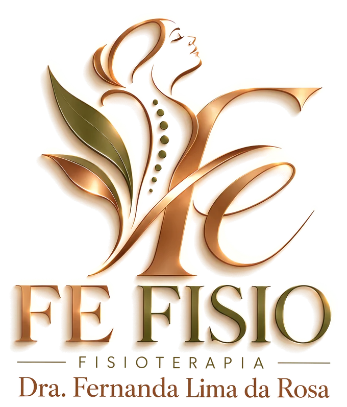
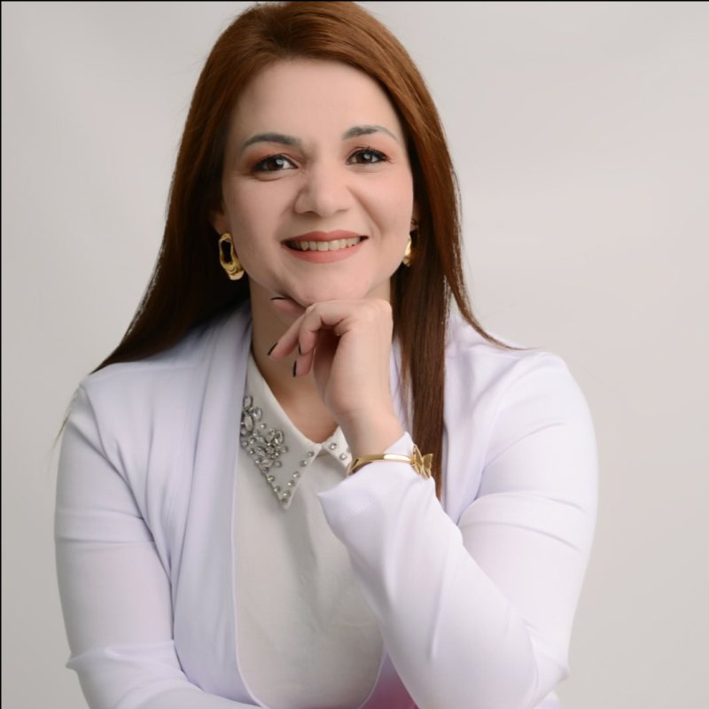

Dermato Funcional
Tratamento de disfunções da pele e do tecido subcutâneo, com foco em função e bem-estar.
Cuidado facial, corporal e pós-operatório no consultório, e fisioterapia respiratória e motora em domicílio. Sempre com avaliação individualizada e condutas baseadas em evidências científicas.
Dra. Fernanda Lima da Rosa · Fisioterapeuta · CREFITO-3 nº 17213-F


Minha trajetória começou na fisioterapia hospitalar: desde 2017 atuo em UTIs, cuidando de pacientes neonatais, pediátricos e adultos. Essa experiência moldou a forma como enxergo cada pessoa, de maneira integral.
Na Fisioterapia Dermato Funcional encontrei uma forma de unir reabilitação, funcionalidade e autoestima. Cada tratamento parte de uma avaliação individualizada e de protocolos baseados em evidências científicas.
Cada plano é definido após a avaliação fisioterapêutica, de acordo com seus objetivos e com o que é seguro e indicado para o seu caso.
Tratamento de disfunções da pele e do tecido subcutâneo, com foco em função e bem-estar.
Acompanhamento após cirurgias plásticas e reparadoras, alinhado à equipe médica.
Técnica manual que estimula a circulação linfática em pós-operatórios e edemas.
Recursos manuais e tecnológicos para a qualidade e a firmeza da pele do rosto.
Aquecimento controlado dos tecidos para estimular colágeno, no rosto e no corpo.
Microperfurações controladas que estimulam a regeneração da pele, com biossegurança.
Energia focada em camadas profundas da pele para estimular sustentação, sem cortes.
Combinação de técnicas definida para você, com reavaliações periódicas.
A indicação de cada técnica depende de avaliação fisioterapêutica presencial. As respostas ao tratamento variam de pessoa para pessoa.
Atendimento fisioterapêutico na casa do paciente, para quem está em recuperação após a alta hospitalar, tem mobilidade reduzida ou precisa de acompanhamento contínuo. A experiência em terapia intensiva traz segurança no cuidado de pacientes com maior complexidade.
Atendimento com agendamento prévio. Consulte pelo WhatsApp a disponibilidade para o seu bairro.
Higiene brônquica, reexpansão pulmonar e treino da musculatura respiratória, inclusive para pacientes traqueostomizados ou em uso de oxigênio domiciliar.
Exercícios para ganho de força, amplitude de movimento e independência nas atividades do dia a dia.
Acompanhamento após AVC e em doenças neurológicas como Parkinson, com foco em equilíbrio, marcha e funcionalidade.
Recuperação do condicionamento e da mobilidade após internações, incluindo períodos em UTI.
Prevenção de quedas, treino de equilíbrio e manutenção da autonomia da pessoa idosa.
Mobilização, posicionamento e prevenção de complicações respiratórias e de lesões por pressão, com orientação aos cuidadores.
Reabilitação em casa após cirurgias como próteses de quadril e joelho e correção de fraturas.
Treinamento de familiares e cuidadores para transferências, posicionamento e exercícios entre as sessões.
Você fala diretamente com a Dra. Fernanda pelo WhatsApp e escolhe o melhor horário.
Consulta individual para entender sua história, queixas, objetivos e possíveis contraindicações.
Definição das técnicas, da frequência das sessões e dos cuidados em casa.
Reavaliações ao longo do tratamento para ajustar o plano à sua evolução.
Anos de atuação em UTI trazem rigor técnico, raciocínio clínico e atenção à segurança em cada procedimento.
Técnicas e tecnologias escolhidas a partir de estudos científicos e de atualização profissional constante.
Consultório próprio, com hora marcada e acompanhamento feito pela mesma profissional do início ao fim.
O agendamento é feito pelo WhatsApp. Atendimento com hora marcada no consultório, no centro de São Caetano do Sul.